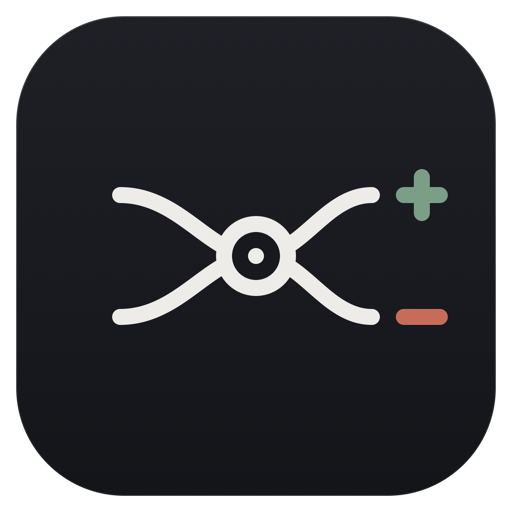

Every branch
Work beyond main is counted
Gitlines discovers recent activity on any branch and deduplicates commits that appear on more than one, by repository and SHA. What you shipped on a feature branch counts on the day you shipped it.
Gitlines puts your actual commit activity on the Mac desktop: exact additions, deletions, net lines, peak hours and repository rankings, gathered across every branch and deduplicated by SHA. It ships in six complete visual themes, each with four hand-built widget layouts, and every one of them prints the identical figures.
Download for macOSSee the filmScroll to spread the deck.
Gitlines discovers recent activity on any branch and deduplicates commits that appear on more than one, by repository and SHA. What you shipped on a feature branch counts on the day you shipped it.
Choose a period for each widget and cycle it from the widget itself. Show the calendar day, week or month, or a rolling 24 hours, 7 days or 30 days. Both are cached on every refresh so the switch is immediate.
Totals come from GitHub's individual commit statistics. Alongside them: active intervals, peak activity, averages and a ranking of repositories by change.
Connect a personal account, then add organizations independently with fine-grained, read-only tokens. GitHub limits each token to one resource owner, so every organization gets its own. All tokens live only in Keychain.
The host app is the only GitHub client. It writes display-ready snapshots atomically to the shared App Group container, and the widget extension only reads that cache.
If a refresh fails the widget keeps the last successful snapshot and marks it stale. Refreshing from the widget is deliberately light; the app performs the full branch discovery.
gitlines · thesis-icu · widtget-app
23 commits · peak 14:00 · avg 1.9/h
The commit snek grows one segment per commit. Its states are recorded in the source as smol snek, growing snek and snek happy. The editors did not add this for the newspaper. It is in the code.

macOS 14 or newer · 3.8 MB disk image
Download gitlines.dmgView on GitHub